Warn hata Tach Posted on June 8, 2016
Tag 11
Kolding - Aarhus 128 km
Dies war der bislang längste und anstrengenste Tag. Aber auch einer der schönsten.
Zunächst bin ich nach Kolding zur Bibliothek gefahren, da ich gehört hatte das diese in Dänemark stehts Wlan haben. Leider kam ich dort nicht ins Netz. Die Bibliothek lag allerdings direkt am Schloßsee, welchen ich andernfalls sicher verpasst hätte. 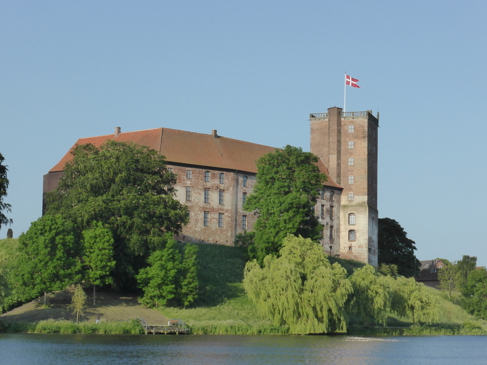 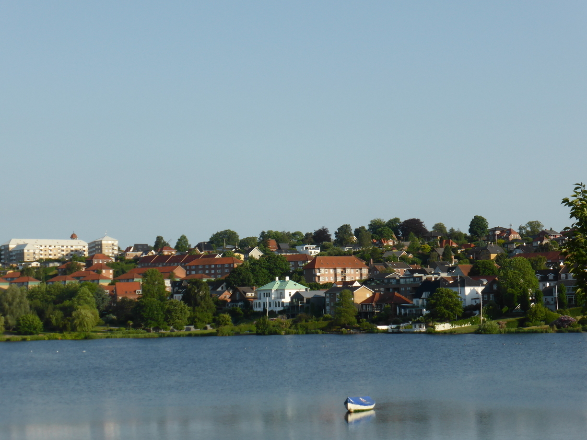 Nach einem kurzen Stopp in Vejle, wo die Touristeninfo leider noch geschlossen war, ging es weiter.
Die Strecke führte fast ausschließlich über wenig befahrene Landstraßen und es ging häufig hoch und runter und Kurven gab es auch, sodass es nicht langweilig wurde. Neben der Straße gab es hauptsächlich Felder und Weiden, auf denen alle möglichen Tiere grasten. Unter anderem auch ein Zebra. 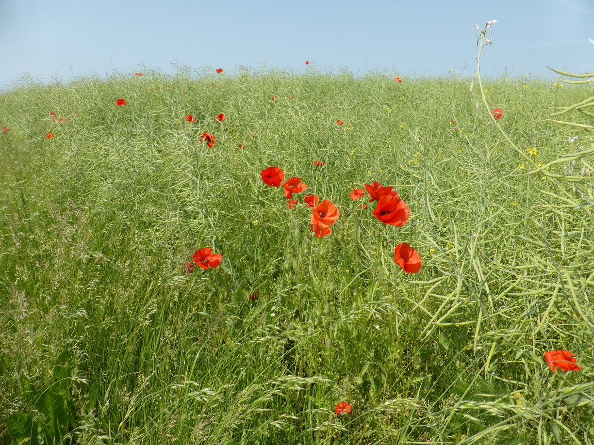 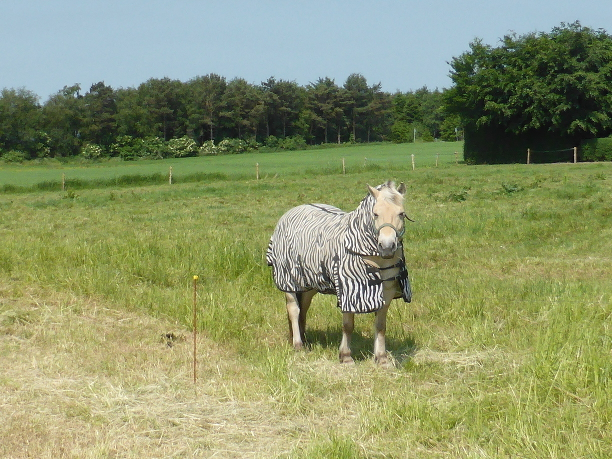
Auf dem Programm standen auch zwei größere Hügel. Man könnte fast von Bergen sprechen. 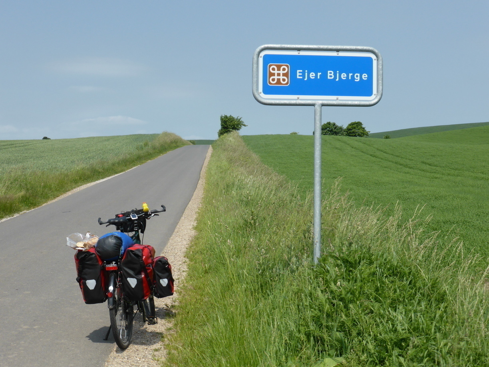
Nachdem die erste Bergwertung geschafft war kam ich nach der Abfahrt direkt an den Mossø. Der perfekte Platz für eine Abkühlung. 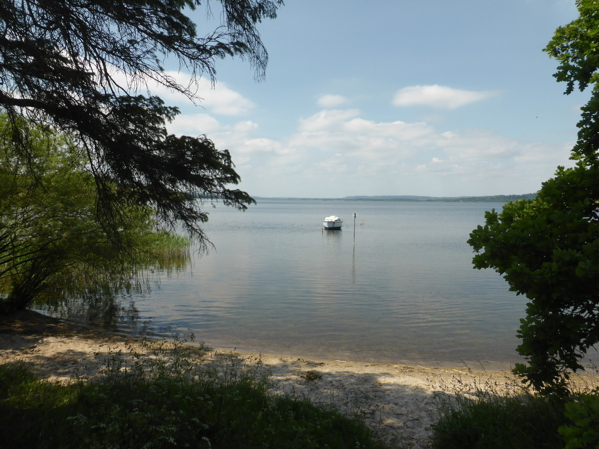
Nachdem der zweite Berg auch geschafft war, war es plötzlich gar nicht mehr so weit bis nach Aarhus. Da kein Campingplatz in Sicht war fuhr ich also weiter.
Als ich mitten im Stadtzentrum von Aarhus war, hatte ich immer noch kein Campingplatzschild gesehen und die Touristeninfo hatte schon geschlossen. Also fragte ich schnell einen Passanten, der darauf hin sein Smartphone befragte. Dieses wusste auch gleich zwei Campingplatz in Aarhus. Ich entschied mich für den ohne “Ø” in der Adresse, da mein Navi immer nur die Sonderzeichen kann, die in der Systemsprache vorgesehen sind. Zufälligerweise lag dieser auch im Norden der Stadt, welches ohnehin in den letzten Tagen meine bevorzugte Richtung ist. Auf dem Campingplatz gab es ein total kniffiges Spieldorf (Nicht Abgebildet: Polizeiwache, Pizzeria). 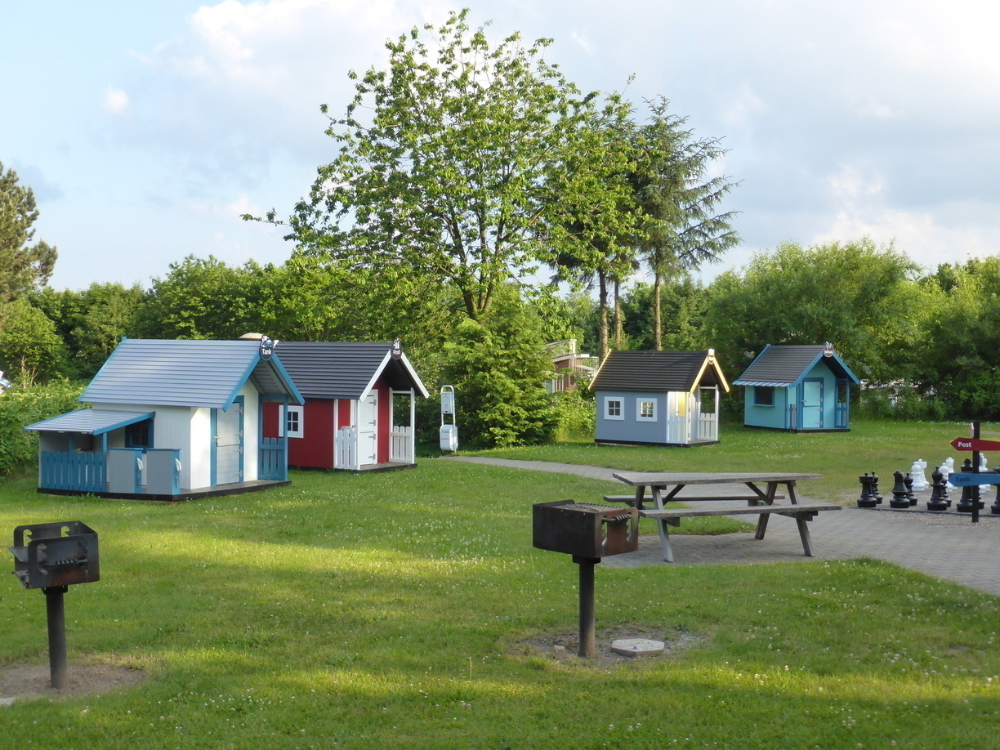
Tag 12
Aarhus - Grenaa 68 km
Die Fahrt von Aarhus nach Grenaa verlief ohne weitere Zwischenfälle. Obwohl ich mir am morgen Zeit gelassen hatte, war ich vor Abfahrt der Fähre in Grenaa, sodass ich kurz überlegte diese bereits heute zu nehmen. Da die Fahrkarten am Schalte aber doppelt so teuer sind wie im Internet viel mir die Entscheidung leicht. Da es direkt an der Fähre kostenlos Wlan gab hab ich die Karte direkt dort gebucht. Anschließend bin ich auf einen Campingplatz in der Nähe der Stadt. Dort konnte ich den Platzwart sogar dazu überreden mir das Wlan kostenlos zu geben. Somit habe ich es endlich geschafft mit dem Blog aufzuholen. 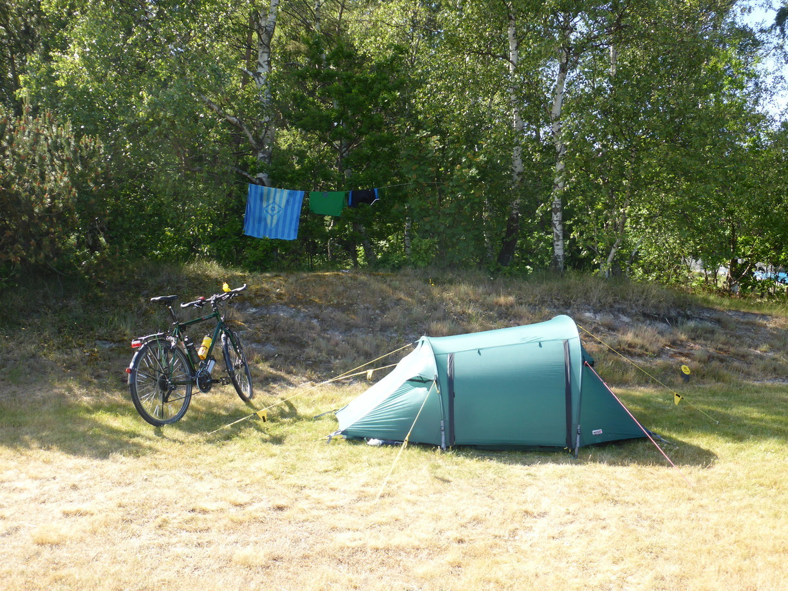
And for todays extra content..
Kochmethodenvergleich
Der Holzvergaser macht am meisten Spaß und man kriegt das Brennmaterial in jedem Wald. Einfach ein paar trockene, tote Äste vom Baum brechen, Birkenrinde, fertig. Macht allerdings auch am meisten Dreck und ist somit nicht immer Campingplatz-geeignet. 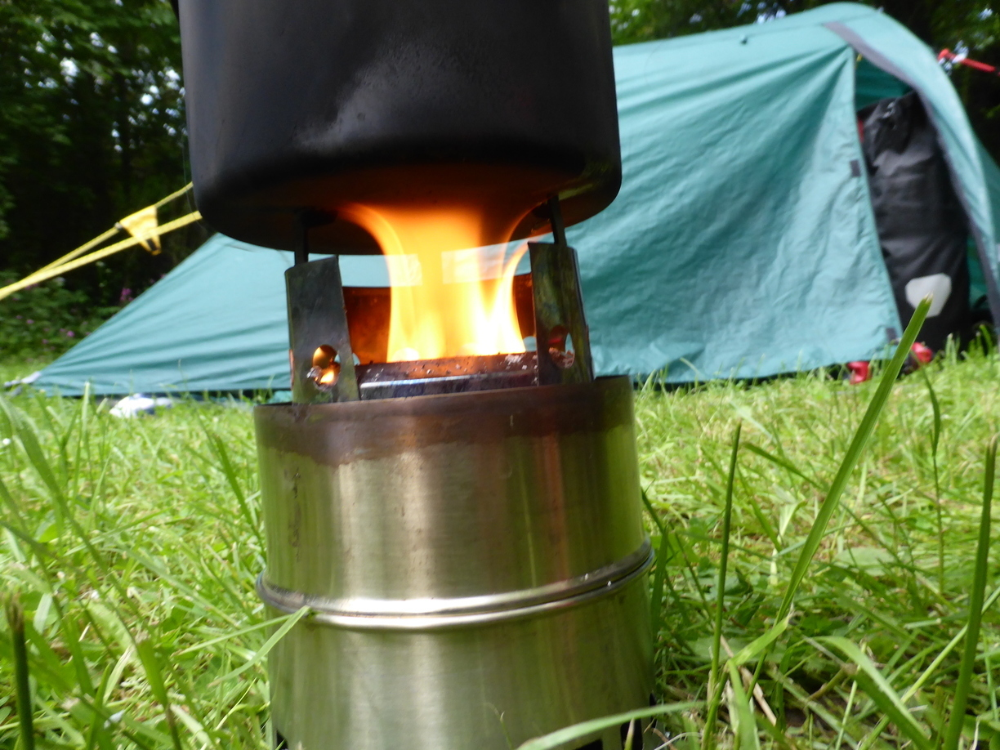
Die Küche, wie sie in Skandinavien meist zum Standard am Campingplatz gehört. Macht nicht viel dreck ist schnell und kostet nix. Ist allerdings auch etwas unromantisch. 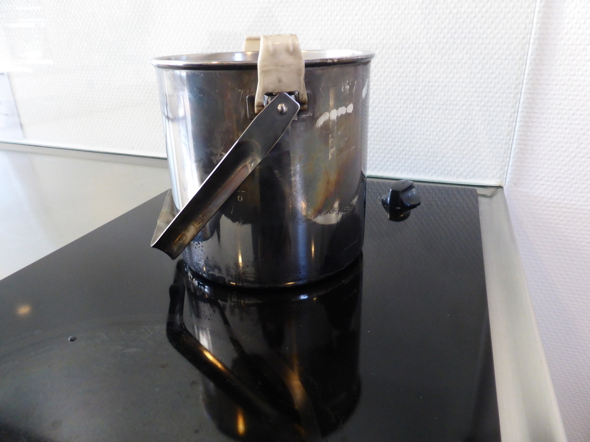
Der Spiritusbrenner ist wohl das Mittelding. Er rußt nicht ganz so dolle und macht auch wenig Dreck. Man kann schön draußen sitzen und hat das Camping-Feeling wie beim Holzvergaser. Allerdings muss man den Brennstoff immer mitschleppen. 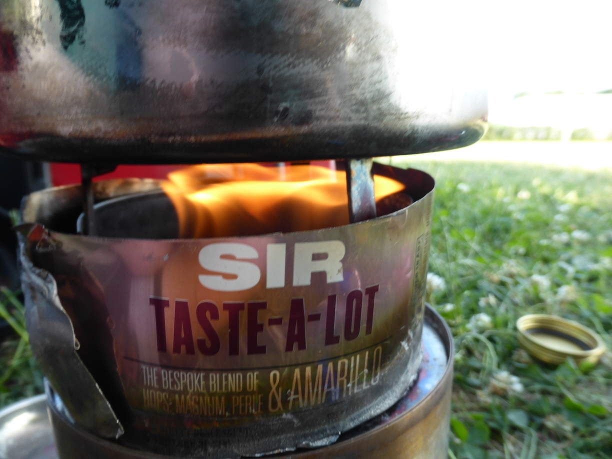